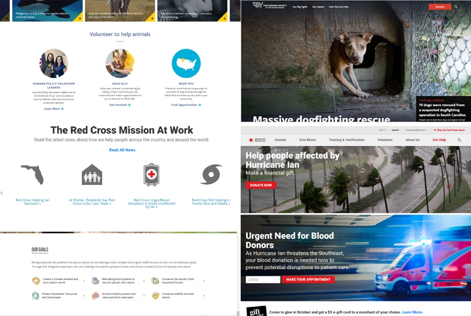
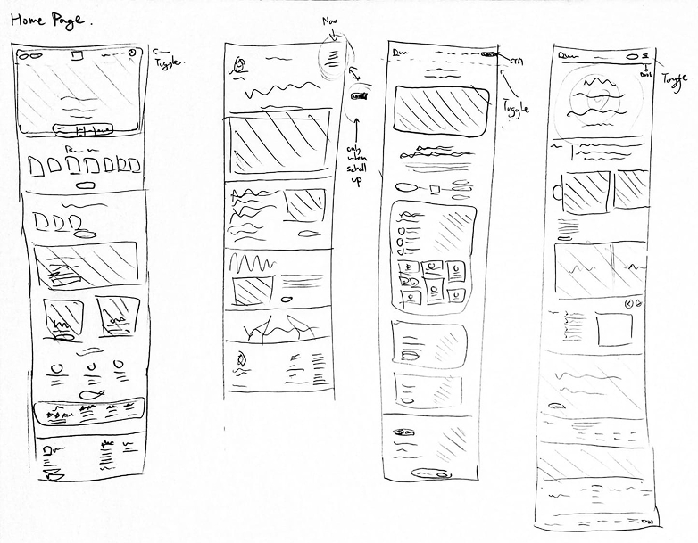
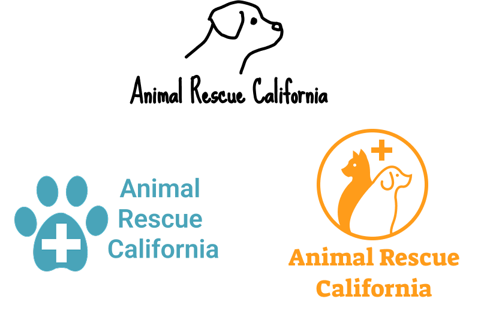
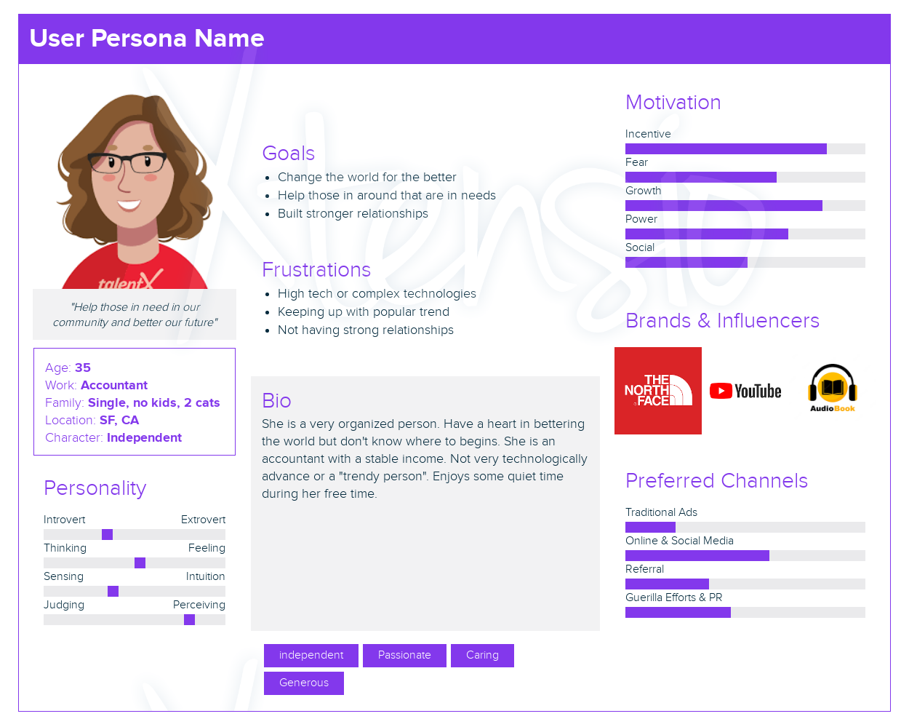
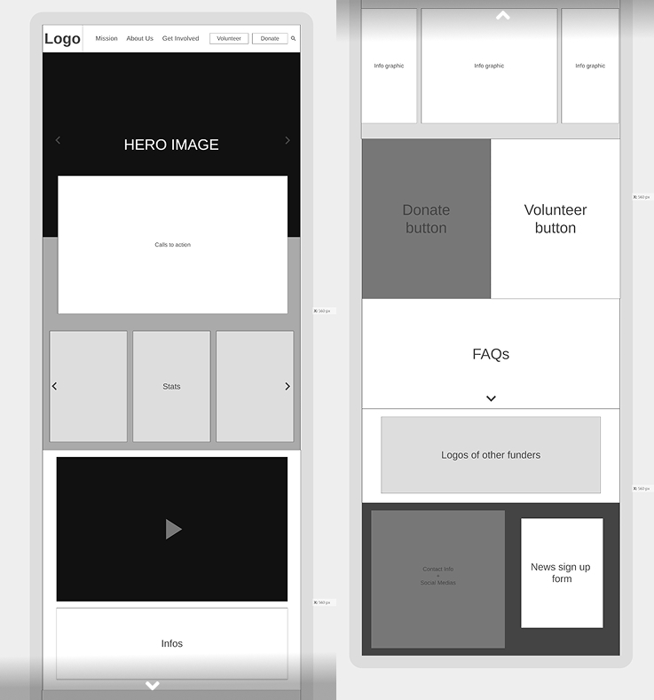
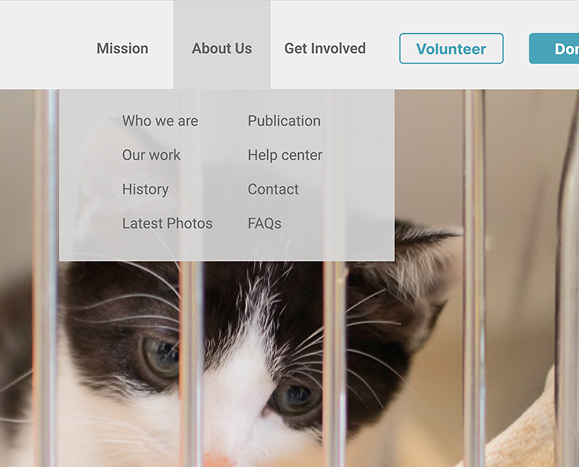
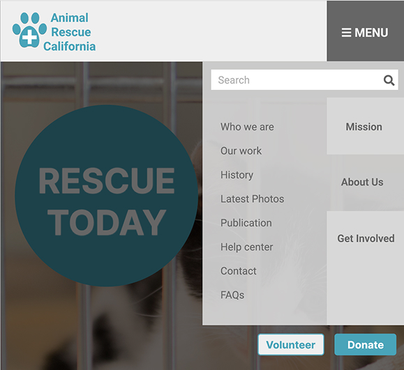
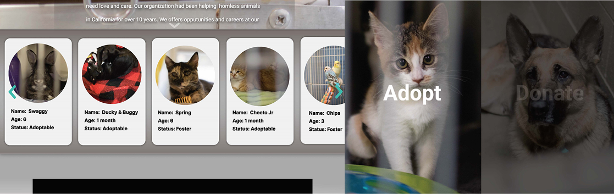
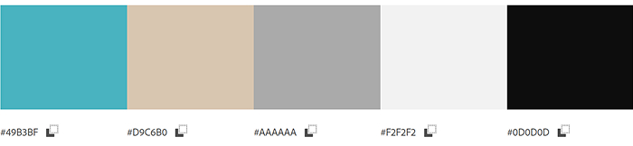

This nonprofit website was created to raise awareness about pet adoption and highlight animals in need of homes. I designed both desktop and mobile versions of the homepage with real photographs taken at an animal shelter. The project focuses on emotional appeal, clean visual hierarchy, and responsive layout principles.
Before designing the website for Animal Rescue California, I studied other nonprofit sites to understand successful patterns in layout, tone, and user engagement. A consistent trend across these examples was the use of strong hero images paired with clear calls to action. These elements immediately convey purpose and invite users to get involved.
I also observed the use of simple but bold color palettes—like red and white in the American Red Cross—which helped create a professional and trustworthy tone. Imagery was used heavily throughout, not only to build emotional connection but also to guide users visually through various options like donating, volunteering, or learning more.
Another pattern I noted was the strategic placement of action buttons in the top navigation and alongside content blocks, encouraging users to participate from multiple touchpoints. These insights shaped how I approached layout spacing, iconography, and user flow in my own design.
I created a series of sketches to explore logo designs, layout possibilities, and content hierarchy. These helped shape the site’s approachable, trust-building tone.
 I created a user persona representing a young adult animal lover looking to adopt and volunteer. This helped keep the design empathetic and guided choices like prominent CTA buttons and emotional imagery.
The wireframes focused on a homepage that clearly communicates the mission and draws visitors toward action—either by adopting, donating, or learning more. I emphasized simplicity and warm, welcoming colors.
The site layout is designed to adapt seamlessly across devices. The navigation menu collapses into a hamburger menu on smaller screens for mobile accessibility while maintaining visibility and usability on desktops.
 The finished homepage design includes real animal photos I took during a shelter visit, combined with soft typography and inviting color palette. It adapts well across screen sizes, ensuring a strong mobile experience.
 This project helped me apply UX research methods in tandem with visual design skills. I learned how to guide a viewer’s attention, use real content for emotional engagement, and build responsive layouts that preserve intent across devices.